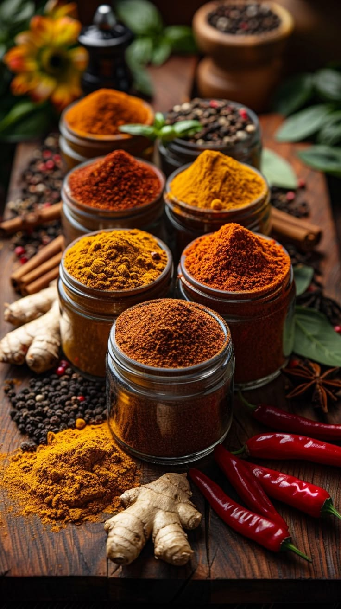

Notre Histoire
La passion des deux rives depuis 2010


Notre Histoire
La Passion des Deux Rives
Fondé en 2010, KaayLeek — qui signifie "bonne nourriture" en Wolof — est né d'une passion commune pour deux univers culinaires riches et distincts.
Notre chef, formé entre les étoilés de Paris et les grands maîtres de la cuisine sénégalaise, a voulu créer un lieu où les saveurs du terroir africain rencontrent l'élégance de la gastronomie occidentale.
Chaque plat est une invitation au voyage, préparé avec des produits frais, soigneusement sélectionnés auprès de nos producteurs locaux et de la mer de Saint-Louis.
Nos Valeurs
Ce qui nous rend uniques
Authenticité
Nous respectons les traditions culinaires des deux rives tout en osant l'innovation. Chaque recette raconte une histoire.
Fraîcheur
Nous sélectionnons rigoureusement nos ingrédients auprès de producteurs locaux pour garantir une qualité optimale.
Passion
Notre équipe met tout son cœur dans chaque plat, car nous croyons que la cuisine est avant tout un acte d'amour.
L'Équipe